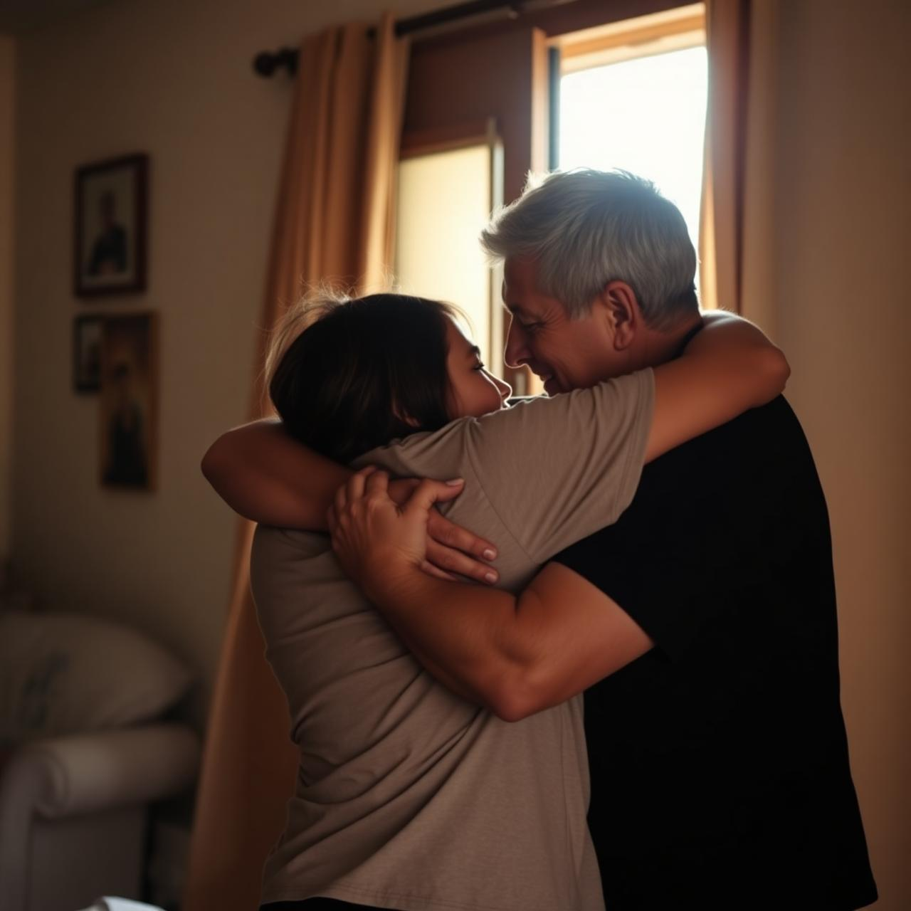
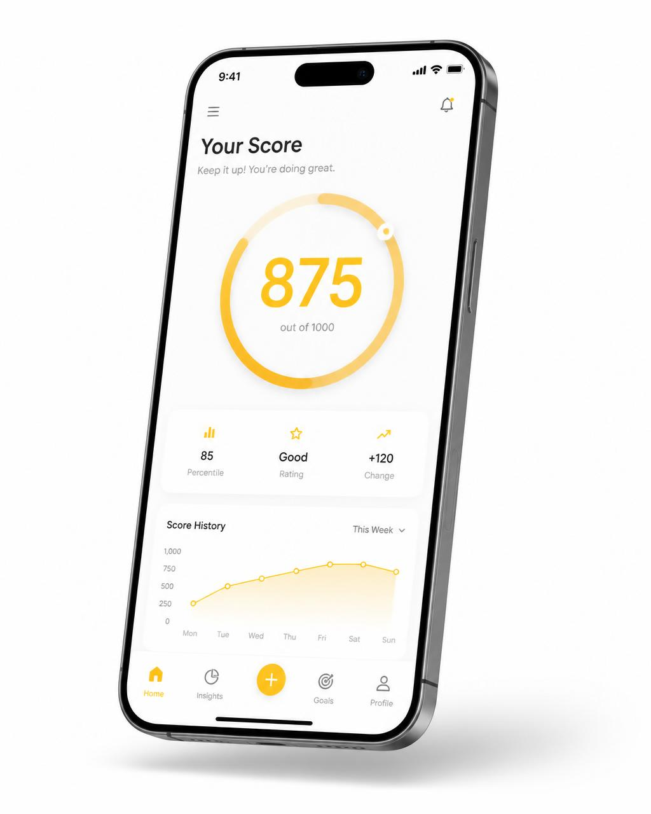

Método
A base filosófica que orienta tudo.
Saiba mais
Vivemos em uma sociedade onde a confiança diminui, os conflitos aumentam e boas pessoas acabam pagando pelas atitudes de poucos. A Sou do Bem nasceu para mudar essa realidade.
Nós também.
Acreditamos que aproximadamente 95% das pessoas desejam viver em paz, prosperar e construir boas relações. O problema é que falta um ambiente que incentive esse comportamento.
É exatamente isso que criamos.
A alma da plataforma
"Ninguém modifica ninguém. Porém toda pessoa se modifica quando encontra um bom motivo e recebe a ajuda adequada."

O Problema
A Solução
Nosso método transforma relações humanas em oportunidades de crescimento. Conectamos pessoas, empresas, especialistas e tecnologia em um único ecossistema que incentiva o bom comportamento e recompensa atitudes positivas.
Como funciona
Crie seu perfil em minutos
Conecte pessoas e empresas
Trocas honestas e construtivas
Comportamento observável
Orientação no seu momento
Pequenos passos, grandes mudanças
Cashback, benefícios, prestígio
Você não caminha sozinho

Score do Bem
O Score representa comportamento observado ao longo das suas relações reais — construído com transparência e cuidado.
Nossa IA analisa o seu momento de vida e apresenta soluções em vídeos curtos, conteúdos e orientações produzidos por especialistas certificados pela Sou do Bem para ajudá-lo a evoluir continuamente.
Ecossistema
A base filosófica que orienta tudo.
Reputação por atitudes reais.
Conexões que cuidam.
Consumo que recompensa.
Recursos que voltam à comunidade.
Conflitos resolvidos com humanidade.
Expansão nacional do movimento.
A filosofia em palavras.
Vozes que amplificam o Bem.
Empresas certificadas, clientes do Bem e recompensas que retornam para quem age com integridade. Um marketplace que valoriza relações antes de transações.
Parte dos recursos movimentados dentro do ecossistema retorna para a comunidade por meio do Fundo do Bem, ajudando pessoas em momentos realmente importantes.
Renda recorrente, expansão nacional e um propósito que vai muito além de um negócio.
Impacto real
Vozes da comunidade
"Encontrei um lugar onde minhas atitudes valem algo. Mudou como olho para as pessoas."
"Não é só um negócio. É um propósito que faz sentido todos os dias."
"Nossos clientes voltaram com outra energia. O selo virou orgulho do nosso time."
"Em um momento muito difícil, a comunidade nos abraçou. Nunca vou esquecer."
Perguntas frequentes
Não encontrou sua dúvida? Fale com a nossa equipe.
É uma plataforma e um movimento que conecta pessoas, empresas e especialistas em torno de boas atitudes, com tecnologia para apoiar a evolução de cada um.
Você se cadastra, constrói relações reais, recebe e dá avaliações, evolui seu Score e acessa recompensas e conteúdos personalizados pela IA.
Sim, a participação na comunidade é gratuita. Existem planos e produtos para quem deseja se aprofundar ou empreender dentro do ecossistema.
Por meio de boas atitudes, consumo consciente no marketplace e participação ativa no ecossistema.
O Score reflete o seu comportamento ao longo das relações, com transparência e cuidado com a privacidade.
Qualquer pessoa, família, empresa ou comunidade que deseje viver relações mais saudáveis.
Parte dos recursos movimentados no ecossistema é destinada a apoiar pessoas em momentos críticos.
Ela analisa o seu momento e sugere conteúdos curtos e orientações de especialistas certificados.
A Sou do Bem não é apenas um aplicativo. É um movimento. Uma comunidade. Um novo modelo de convivência humana.